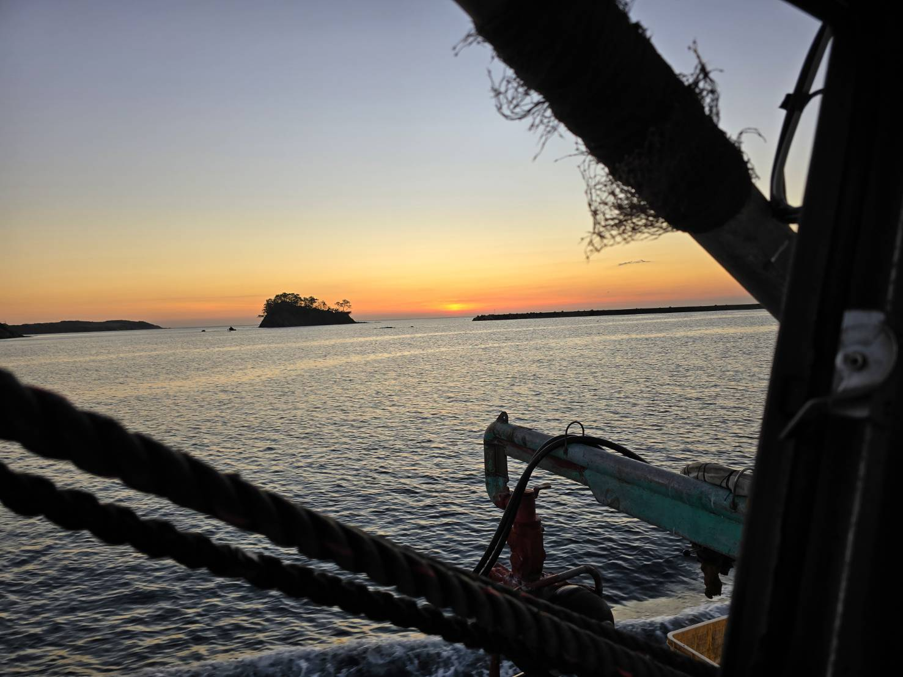
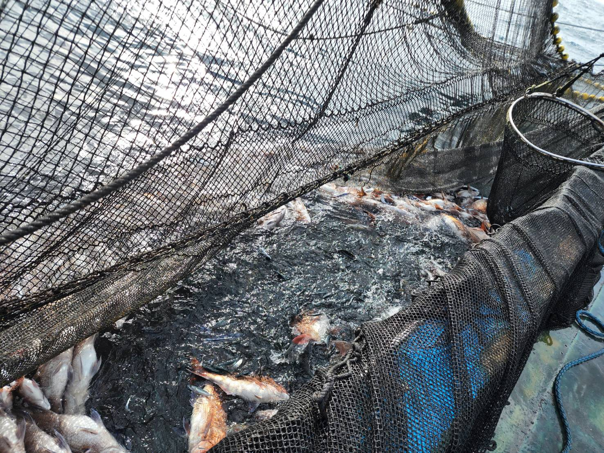
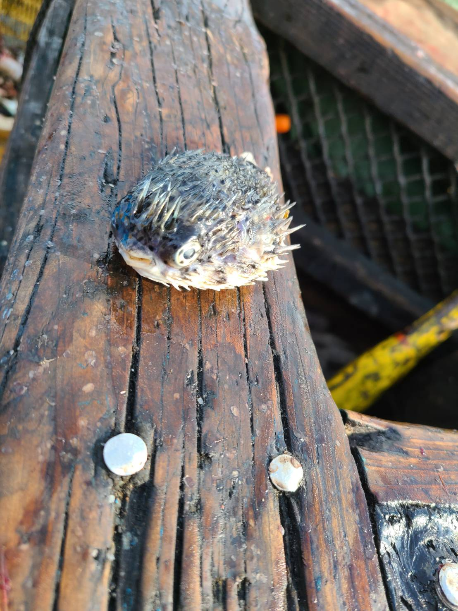

定置網日誌
日々の漁と海の記録
  
📺
YouTubeでも動画配信中‼
定置網の迫力ある映像や、日々の記録を動画でお届けしています。
チャンネル登録はこちらから。
投稿頻度はかなり少ないと思われます
2025.11.29
ブログを開設しました
2025.11.30
３か月ぶりの漁をしました
2025.12.01
漁再開二日目
2025.12.05
ブログ開設から一週間経ちました
2025.12.12
12.12私たちの週初めは日曜日
2025.12.19
未投稿です
2025.12.26
未投稿です
2025.12.29
未投稿です
2026.01.04
初漁です
2026.01.09
未投稿です
2026.01.16
未投稿です
2026.01.23
未投稿です
2026.01.30
未投稿です
2026.02.06
未投稿です
2026.02.13
未投稿です
↑
×